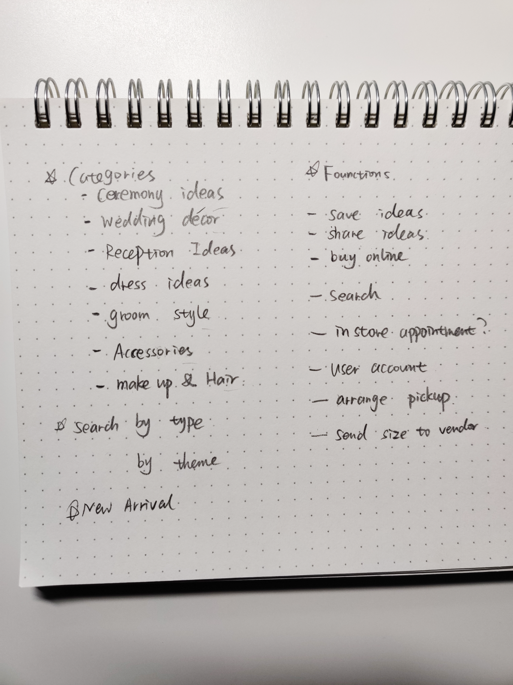

Getmarried
An all-in-one web application helps people plan their traditional wedding ceremony efficiently.
Getmarried was designed based on a problem by myself. I was planning my Chinese traditional wedding ceremony 2 years ago. I spent about 6 months researching what should I wear and what decorations did I need to buy. I did a lot of paperwork to collect all the information that I need, it frustrated me, but the most exhausting part was finding and trying the traditional wedding dress. There are not many choices in my neighbourhood and the shipping time from buying abroad is uncontrollable. I wonder why there wasn't a website/app where I can not only collect those wedding ideas and taboos but also buy traditional dresses and wedding decorations online.
Project Duration
1 Month
Project Type
Conceptual,Google UX Deisgn Course Project
My Role
UX Design,Visual Design,Competitive Audit,User Research, Prototyping, Usability Testing

Problem
Brides usually start to prepare their wedding a year ago, finding the right place, decorations and dress could be both exciting and frustrating. The young generation who has different cultural backgrounds and wants to hold their wedding ceremony the traditional way is even harder. Especially during the pandemic, it takes courage to go to the dress store to try on those amazing wedding dresses, it takes so much time to collect the information brides need. How Might We help them sort the information in one place? How Might We help them save time? How Might We assure they are safe when go to the store?
Goals
- Gather Ideas in one place
- Buy wedding dresses online and deliver to home
- One app can both find wedding ideas and buy wedding dress and decorations
My Approach
In order to make sure those problem statements cover all user needs, I interviewed 5 friends who want to hold a traditional wedding ceremony from their own culture and will be my potential user. Their ages are from 24 - 38.
Personas
I collected all the interviewees' pain points and I created the following two personas. It shows that the initial user problems fit the problems with my potential users.
User Journey Map (As-Is)
I created this user journey map based on the persona's wedding shopping and information collecting process. I will focus on the Improvement Opporturnities when I design

Competitive Audit
There isn't a website that users can both look for wedding ideas and buy wedding dresses online, so, I compared three of the most famous websites for wedding plans. All three wedding websites have useful and diverse information. I'd like to see what they offer and how they presented it. This will help me to define my user flows and avoid current user pain points. Brides.com and Pinterest.com are more like blogging website, which shares wedding ceremony tips and ideas. BHLDN.com is a shopping website where you can buy wedding dresses online.
BRIDES.COM
- Large variety of wedding ideas and inspiration
- Easy to share post via Facebook,Pinterest and Email
- Lack of online shopping feature could be add to Getmarried
PINTEREST.COM
- Easy to save dress and ideas to user account
- Great variety of wedding dresses and ideas
- Direct to the three party website to purchase a dress
DHLDN.COM
- Clear navigation lets users choose dresses by different categories
- A precise size guide lets users feel comfortable to shop online
- Add on ceremony ideas feature would attract more audience
Information Architecture
Based on user journey map and competitive audit, I created so many features that match users' needs and satisfy the user experience. I applied Hick-Hyman's Law to my wireframe, to avoid giving overload choices to users' that increases their time to make a decision, giving them work they don't want. Information architecture ensures the wealth of content inside my website is well organized, wedding ideas are clearly and easily searched and arranged in such a way that is understandable to users.
User Flow
Based on user journey map andhem work they don't want. eas ar.